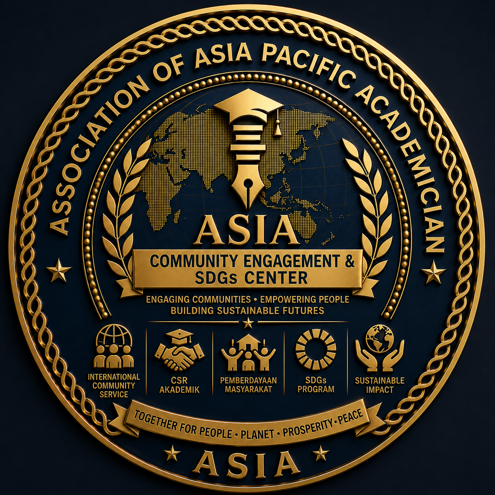

ASIA Community Engagement & SDGs Center
Local Action. Global Goals. Sustainable Impact.
The ASIA Community Engagement & SDGs Center (ASIA-CESC) is the official community engagement, social innovation, sustainability, and impact development center of the Association of Asia Pacific Academician (ASIA). It serves as the strategic platform for translating academic knowledge, scientific research, technological innovation, and professional expertise into meaningful actions that improve communities and contribute to sustainable development across the Asia-Pacific region and beyond.
ASIA-CESC connects universities, researchers, students, professionals, governments, industries, civil society organizations, local communities, and international partners through collaborative initiatives that address real-world challenges in education, health, economy, environment, governance, technology, and social development.
Rather than viewing community engagement as a one-time outreach activity, ASIA-CESC promotes a long-term impact ecosystem where research generates innovation, innovation empowers communities, and empowered communities create sustainable transformation aligned with the United Nations Sustainable Development Goals (SDGs).
As one of ASIA's strategic bodies, ASIA-CESC strengthens the social responsibility of higher education institutions while advancing inclusive development, environmental stewardship, and international cooperation for a better future.
"To become the leading multidisciplinary community engagement and sustainable development center in the Asia-Pacific region, transforming academic knowledge into measurable social, economic, environmental, and global impact."
ASIA-CESC is committed to:
Strengthening the capacity, resilience, independence, and well-being of communities through sustainable development initiatives.
Supporting practical implementation of the Sustainable Development Goals through collaborative action and evidence-based programs.
Transforming academic knowledge, research, and innovation into real solutions that address community needs and create measurable impact.
Encouraging creative, inclusive, and technology-driven approaches to solving social and environmental challenges.
Building strong partnerships among universities, governments, industries, NGOs, development agencies, and international organizations.
Ensuring every community engagement initiative generates measurable, transparent, and sustainable outcomes.
ASIA-CESC serves as the official community engagement and sustainability platform responsible for:
An integrated community impact ecosystem consisting of:
The integrated pathway that transforms academic knowledge into measurable, lasting sustainable development for communities and society.
ASIA-CESC supports multidisciplinary community engagement initiatives across all academic fields represented by ASIA:
Strategic Commitment: ASIA-CESC is committed to building an internationally connected community engagement ecosystem where academic knowledge becomes practical action, collaboration creates innovation, and innovation generates measurable and sustainable impact for communities, institutions, and future generations.